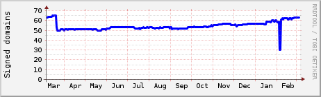

Authorities with DNSSEC
myndighetermeddnssec.se is an independent website that show the authorities domains health and if it's signed with DNSSEC or not.
A DNSCheck againist 216 domains 2014-03-05 gave a result of 30 recursice DNS's and DNSCheck also found 130 ERROR and 241 WARNINGS
1 domains has just one DNS,
3 DNS's is running BIND version 8.* and 0 is Windows 2000
Contact: tobbe (a] interlan punkt se

Domains
 domain domain | Signed with DNSSEC and without remarks |
| domain | Without remarks in DNSCheck but not signed |
| domain | Signed with DNSSEC but with warnings |
| domain | Warnings in DNSCheck |
| domain | Error in DNSCheck |
Updated Wed Mar 5 01:12:02 CET 2014
63 of 216 domains secured
63 of 216 domains secured